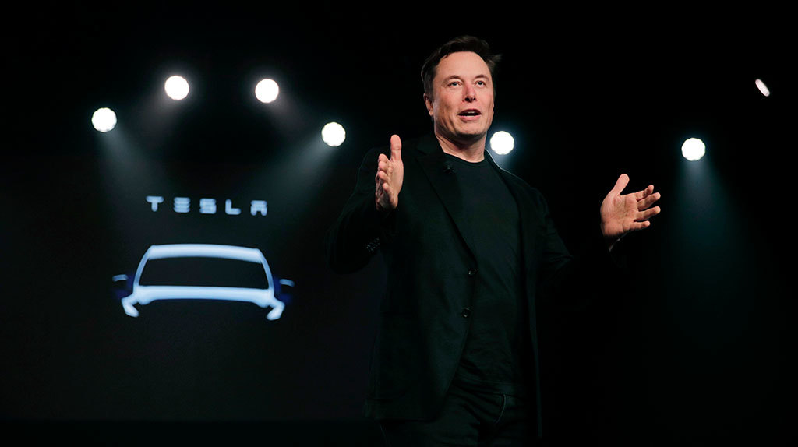

About Elon Musk
(1971 – present)
Elon Musk is a South African-born entrepreneur, engineer, and inventor.
He is best known as the founder of SpaceX, Tesla, and co-founder of PayPal.
Musk has revolutionized space travel, electric vehicles, and renewable energy.
His bold vision includes making humanity a multiplanetary species.
Important Events
- 1999 – Co-founded X.com, which later became PayPal.
- 2002 – Founded SpaceX.
- 2004 – Joined Tesla Motors as chairman and later became CEO.
- 2015 – Co-founded OpenAI.
- 2016 – Founded Neuralink and The Boring Company.
- 2022 – Acquired Twitter (renamed X).
Key Contributions
- SpaceX – reusable rockets.
- Tesla – mass production of electric cars.
- SolarCity – solar energy solutions.
- Neuralink – brain–computer interface research.
- Starlink – satellite internet network.
